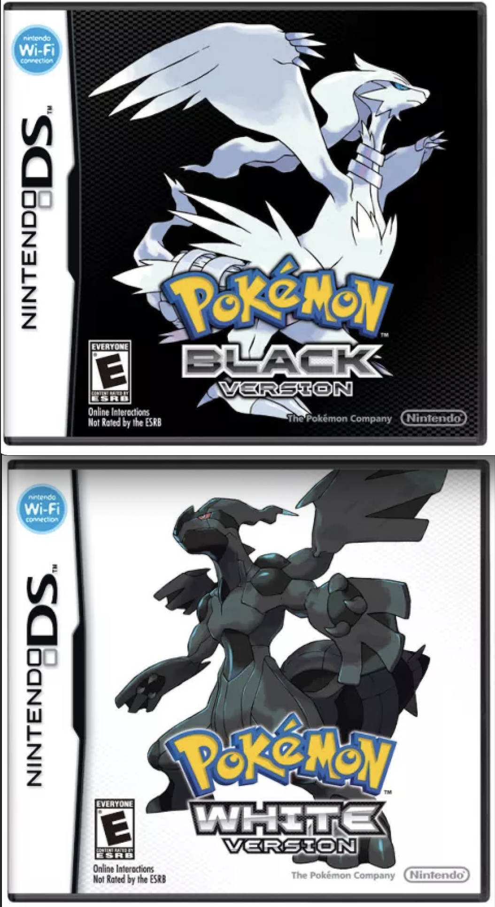
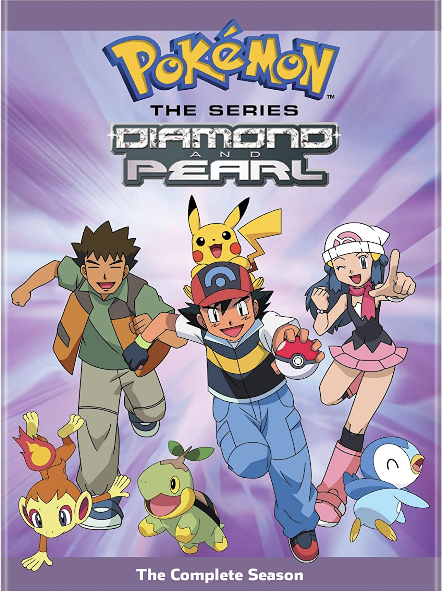

About Me
Upon being born in the early 2000's, and growing up with a bunch of older cousins, I was surrounded by
world of Pokémon. I grew up watching my cousin's play Pokémon Diamond and Pokémon Pearl on their Nintendo DS, until
I eventually was able to have my own Nintendo DS. I would also wake up on Saturday morning, eat breakfast, and watch whichever Pokémon episode that was airing.
At a certain age, I even began collecting a bunch of Pokémon cards with my little sister. Even though we would play an incorrect version of the Trading Card Game, we still enjoyed seeing our many Pokémon cards.
As of recently, Pokémon is still prevalent in my life. I own the newest game for my Nintendo Switch, and attempt to collect as many Pokémon figurines. Even after all these years, Pokémon has, and forever will be in my life.
Still, there are about 989 Pokémon, 122 released Pokémon games, 1,115 TV show episodes, 23 movies, and a lot more that is unacounted for. Which is why I am here to give you some of my Pokémon recommendations.
Pokémon Black and White
Even though Pokémon Diamond and Pearl were the first games I played, I think Pokémon Black and White were one of my childhood favorites.
Black and White features Team Plasma, a group that believe Pokemon should be allowed to roam free and not be tied down by a trainer.
The graphics have improved from its previous games, so this game really made my childhood.


Pokémon Diamond and Pearl: The Series
Pokémon Diamond and Pearl: The Series is so iconic. We meet Dawn, a fantasic female addition to Ash's team. While she is still a trainer, her main dream is to be the best coordinator in the Pokemon league.
Not only that, but she has the cutest of Pokémon! Piplup, Chimchar, Turtwig, and many others are so much fun to watch!
Pokémon: Zoroark Master Of Illusions
Back in 2010, this was probably one of the first Pokémon movies I have ever watched. We follow the main characters, Ash, Brock, and Dawn as they arrive in a new city to watch the Pokémon Baccer World Cup.
However, while visiting the city, Ash and the gang discover that a Zoroark has fallen under the control of a maniacal villain and is wreaking havoc on the city.
It left a huge impact on me as a kid!
Cyndaquil, Quilava, and Typhlosion
Originally discovered in the Johto Region, Cyndaquil and its relatives are a Fire-type Pokémon with Fire-type and Normal-type moves.
Cyndaquil was my favorite starter Pokémon to the game, Pokénon Heartgold and Soulsilver.